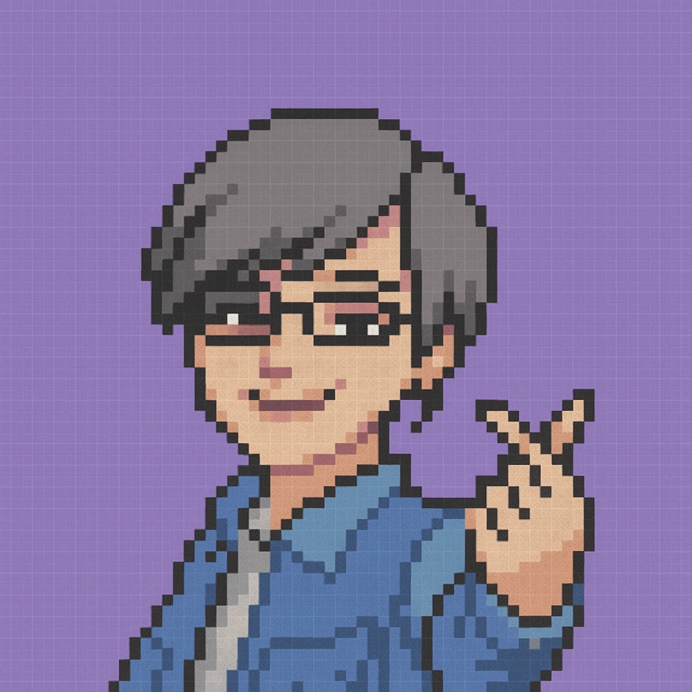
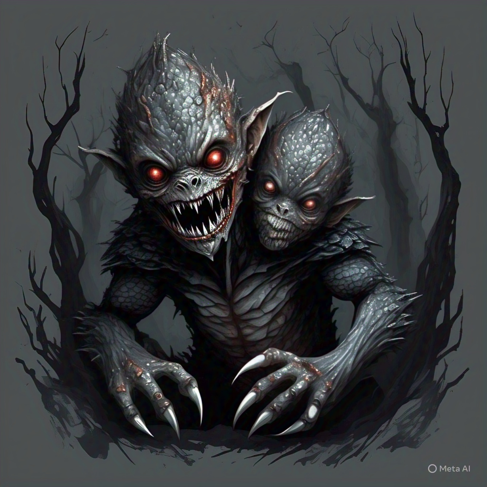

Hola, gracias por despertar, administrador.

Soy yo, la Doctora Guadalupe... pero me puedes decir Lupita.
Necesito que me ayudes, estudiante. El Bicéfalo se ha despertado y su caos amenaza nuestra facultad.
El Bicéfalo tiene dos cabezas: una representa la desorganización; la otra, la desidia. Solo tú puedes enfrentarlo...
Pero para purificarlo, deberás demostrar que dominas tres áreas clave...
Estrategia Administrativa - Recursos Humanos - Logística
Elige por qué área quieres empezar:
Módulos completados: 0/3

¡Listo! Ya completamos los módulos. Dale tu conocimiento al bicéfalo para que lo ayudes a purificarse
🎉
¡Lo lograste!
El Bicéfalo ha sido purificado. Eres digno del título de Administrador Supremo.
El Bicéfalo sigue con vida... pero has aprendido. Vuelve a intentarlo y purifícalo por completo.
📊 Informe Final